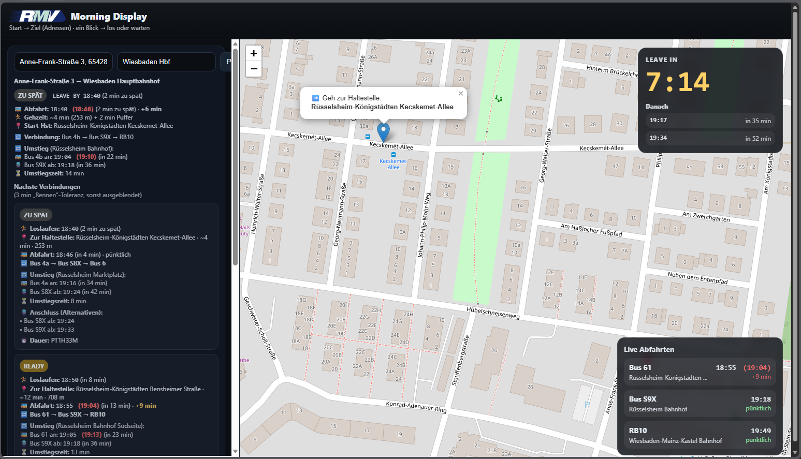

RMV Morning Display
Ein Raspberry Pi Kiosk-Info-Display für Abfahrten, Leave-by Timer und Karte — optimiert für “ein Blick reicht”.

Idee
Das RMV Morning Display ist ein Kiosk-Dashboard für den Alltag: Es zeigt Abfahrten, “Leave-by” Informationen und eine Karte — so, dass man im Vorbeigehen direkt weiß, wo man hin muss.
Features
UI / Anzeige
- ✅Abfahrtsliste + klare Priorisierung
- ✅Karte für Orientierung (OpenStreetMap)
- ✅Optimiert für Kiosk / Fullscreen
Stabilität
- ✅Wartbar & robust im Dauerbetrieb
- ✅Designed für schnelle “1 Blick” Nutzung
- ✅Ready für spätere Remote-Konfiguration
Roadmap
- Remote-Settings (ohne Display) sauber integrieren
- Optional Admin-UI (einfach & sicher)
- Weiteres Design-Polish (Uhr/Datum/Header)